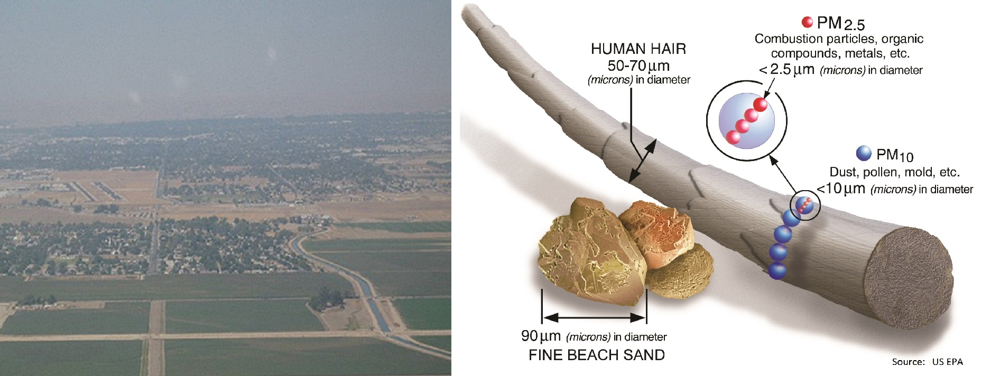
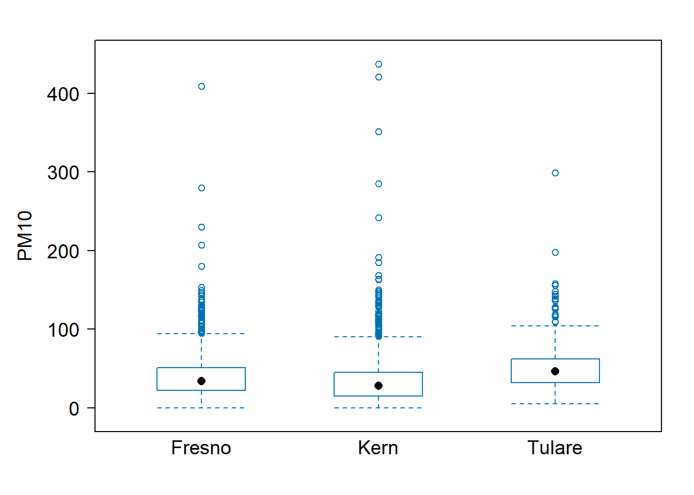
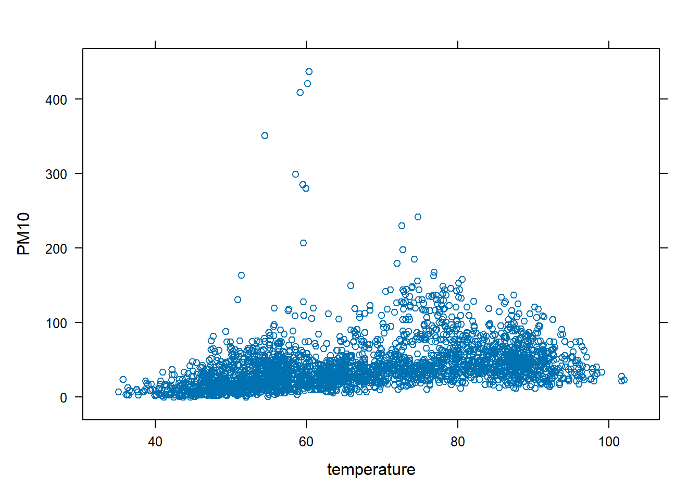

3 Case study 3
3.1 Case study on air pollution
The effects of air pollution are diverse and numerous, such as increased mortality to increased sensitivity of an ecosystem at high concentrations. The pollutants that pose among the highest risk to California are ground level ozone and particulate matter (PM). California continues to mandate ambient air quality standards that tend to be more stringent than national standards. However, reducing air pollution concentrations to acceptable levels remains an on-going challenge in California where seven and eight of its cities (including Bakersfield and others from the Central Valley) rank in the top 10 of the highest levels of ozone and particulate matter (PM) pollution, respectively (American Lung Association, 2017).
PM refers to tiny particles of solid or semi-solid material found in the atmosphere, and it is one of the six common air pollutants identified by the U.S. Environmental Protection Agency (EPA, 2018), and it varies in size, but most monitoring is for two size ranges referred to as PM2.5 and PM10 (particulate matter that is less than 10 micrometers in diameter). For this case study, daily measurements of PM10 in micrograms per cubic meter (\(\mu g/m^3\)) are considered from various monitoring stations in three counties (Kern, Tulare, and Fresno) for the year 2021. The monitoring stations provide the daily average PM10 levels, measurements of temperature (\(^oF\)) and wind speed (knots or kts).
In addition, daily measurements of the US Air Quality Index (an index for reporting air quality) from various monitoring stations for same counties and year are considered. The higher the Air Quality Index (AQI) value, the greater the level of air pollution and the greater the health concern. For more details regarding the AQI, visit AirNow (https://www.airnow.gov/). More details regarding PM10, as well as access to PM and AQI data, are publicly available through the EPA Air Data website (https://www.epa.gov/outdoor-air-quality-data).
The following questions are explored for the 2021 data:
Do daily PM10 levels differ for the three counties?
Is daily PM10 related to daily temperature across all three counties?
Summary of findings
The sample means show that Tulare county had the highest mean daily PM10 as well as the highest average daily temperature. The boxplots show similar behavior with Tulare county having the highest median daily PM10. The boxplots also reflect outlying values for all counties and similar variation in daily PM10 for the three counties. As for the scatterplot, daily PM10 and daily temperature demonstrate a positive linear relationship, with the variability of daily PM10 being less pronounced at the lowest and highest daily temperatures. The scatterplot also reflects clear outlying observations.
| county | mean PM10 | mean temperature | sd PM10 | sd temperature |
|---|---|---|---|---|
| Fresno | 41.10 | 65.87 | 31.88 | 14.17 |
| Kern | 35.07 | 67.49 | 32.26 | 16.01 |
| Tulare | 51.54 | 67.77 | 32.37 | 14.22 |


The summaries suggest differences in PM10 measurements by county and a positive association between PM10 and temperature. Later chapters illustrate tests of these patterns. Their nominal p-values assume independent observations, an assumption that requires assessment because these are repeated daily measurements at monitoring sites and may share weather conditions. The tests should not be treated as validated inferential conclusions until that dependence is addressed.
Scope of inference
This observational case study supports describing associations in the measurements from the monitoring sites and year represented. It does not establish causal effects of county or temperature. Repeated measurements, temporal dependence, and shared weather may affect standard errors and tests; broader generalization requires justification from the site-selection and sampling design.